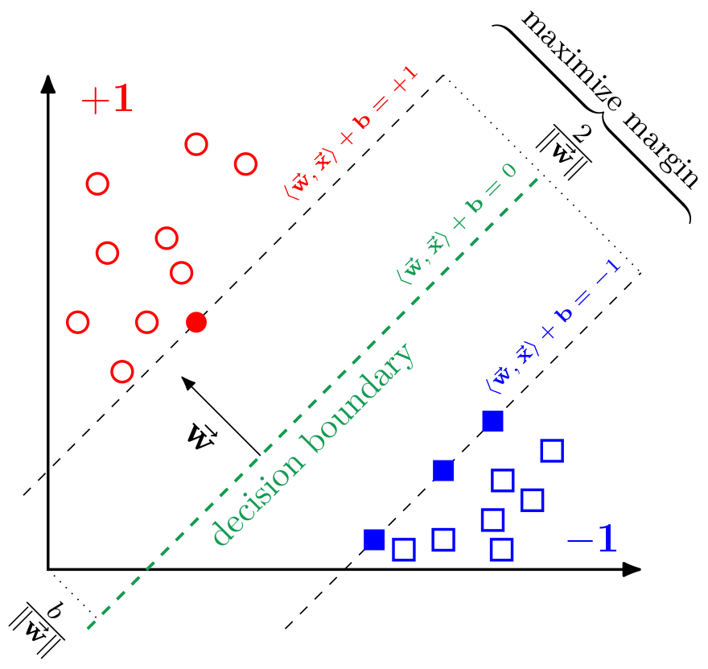

|
PLSSVM - Parallel Least Squares Support Vector Machine
2.0.0
A Least Squares Support Vector Machine implementation using different backends.
|
|
PLSSVM - Parallel Least Squares Support Vector Machine
2.0.0
A Least Squares Support Vector Machine implementation using different backends.
|

A Support Vector Machine (SVM) is a supervised machine learning model. In its basic form SVMs are used for binary classification tasks. Their fundamental idea is to learn a hyperplane which separates the two classes best, i.e., where the widest possible margin around its decision boundary is free of data. This is also the reason, why SVMs are also called "large margin classifiers". To predict to which class a new, unseen data point belongs, the SVM simply has to calculate on which side of the previously calculated hyperplane the data point lies. This is very efficient since it only involves a single scalar product of the size corresponding to the numer of features of the data set.

However, normal SVMs suffer in their potential parallelizability. Determining the hyperplane boils down to solving a convex quadratic problem. For this, most SVM implementations use Sequential Minimal Optimization (SMO), an inherently sequential algorithm. The basic idea of this algorithm is that it takes a pair of data points and calculates the hyperplane between them. Afterward, two new data points are selected and the existing hyperplane is adjusted accordingly. This procedure is repeat until a new adjustment would be smaller than some epsilon greater than zero.
Some SVM implementations try to harness some parallelization potential by not drawing point pairs but group of points. In this case, the hyperplane calculation inside this group is parallelized. However, even then modern highly parallel hardware can not be utilized efficiently.
Therefore, we implemented a version of the original proposed SVM called Least Squares Support Vector Machine (LS-SVM). The LS-SVMs reformulated the original problem such that it boils down to solving a system of linear equations. For this kind of problem many highly parallel algorithms and implementations are known. We decided to use the Conjugate Gradient (CG) to solve the system of linear equations.
Since one of our main goals was performance, we parallelized the implicit matrix-vector multiplication inside the CG algorithm. To do so, we use multiple different frameworks to be able to target a broad variety of different hardware platforms. The currently available frameworks (also called backends in our PLSSVM implementation) are:
General dependencies:
gcc or clang)find_package call)find_package(GTest) wasn't successful)pip install --user -r install/python_requirements.txtAdditional dependencies for the OpenMP backend:
Additional dependencies for the CUDA backend:
nvcc or clang with CUDA support enabledAdditional dependencies for the HIP backend:
Additional dependencies for the OpenCL backend:
Additional dependencies for the SYCL backend:
Additional dependencies if PLSSVM_ENABLE_TESTING and PLSSVM_GENERATE_TEST_FILE are both set to ON:
Building the library can be done using the normal CMake approach:
The CMake option PLSSVM_TARGET_PLATFORMS is used to determine for which targets the backends should be compiled. Valid targets are:
cpu: compile for the CPU; an optional architectural specifications is allowed but only used when compiling with DPC++, e.g., cpu:avx2nvidia: compile for NVIDIA GPUs; at least one architectural specification is necessary, e.g., nvidia:sm_86,sm_70amd: compile for AMD GPUs; at least one architectural specification is necessary, e.g., amd:gfx906intel: compile for Intel GPUs; at least one architectural specification is necessary, e.g., intel:sklAt least one of the above targets must be present. If the option PLSSVM_TARGET_PLATFORMS is not present, the targets are automatically determined using the Python3 utility_scripts/plssvm_target_platforms.py script (required Python3 dependencies: argparse, py-cpuinfo, GPUtil, pyamdgpuinfo, and pylspci).
Note that when using DPC++ only a single architectural specification for cpu, nvidia or amd is allowed.
Example invocation:
or with the --quiet flag given:
If the architectural information for the requested GPU could not be retrieved, one option would be to have a look at:
The [optional_options] can be one or multiple of:
PLSSVM_ENABLE_OPENMP_BACKEND=ON|OFF|AUTO (default: AUTO):ON: check for the OpenMP backend and fail if not availableAUTO: check for the OpenMP backend but do not fail if not availableOFF: do not check for the OpenMP backendPLSSVM_ENABLE_CUDA_BACKEND=ON|OFF|AUTO (default: AUTO):ON: check for the CUDA backend and fail if not availableAUTO: check for the CUDA backend but do not fail if not availableOFF: do not check for the CUDA backendPLSSVM_ENABLE_HIP_BACKEND=ON|OFF|AUTO (default: AUTO):ON: check for the HIP backend and fail if not availableAUTO: check for the HIP backend but do not fail if not availableOFF: do not check for the HIP backendPLSSVM_ENABLE_OPENCL_BACKEND=ON|OFF|AUTO (default: AUTO):ON: check for the OpenCL backend and fail if not availableAUTO: check for the OpenCL backend but do not fail if not availableOFF: do not check for the OpenCL backendPLSSVM_ENABLE_SYCL_BACKEND=ON|OFF|AUTO (default: AUTO):ON: check for the SYCL backend and fail if not availableAUTO: check for the SYCL backend but do not fail if not availableOFF: do not check for the SYCL backendAttention: at least one backend must be enabled and available!
PLSSVM_ENABLE_ASSERTS=ON|OFF (default: OFF): enables custom assertions regardless whether the DEBUG macro is defined or notPLSSVM_THREAD_BLOCK_SIZE (default: 16): set a specific thread block size used in the GPU kernels (for fine-tuning optimizations)PLSSVM_INTERNAL_BLOCK_SIZE (default: 6: set a specific internal block size used in the GPU kernels (for fine-tuning optimizations)PLSSVM_OPENMP_BLOCK_SIZE (default: 64): set a specific block size used in the OpenMP kernelsPLSSVM_ENABLE_LTO=ON|OFF (default: ON): enable interprocedural optimization (IPO/LTO) if supported by the compilerPLSSVM_ENABLE_DOCUMENTATION=ON|OFF (default: OFF): enable the doc target using doxygenPLSSVM_ENABLE_PERFORMANCE_TRACKING: enable gathering performance characteristics for the three executables using YAML files; example Python3 scripts to perform performance measurements and to process the resulting YAML files can be found in the utility_scripts/ directory (requires the Python3 modules wrapt-timeout-decorator, pyyaml, and pint)PLSSVM_ENABLE_TESTING=ON|OFF (default: ON): enable testing using GoogleTest and ctestPLSSVM_ENABLE_LANGUAGE_BINDINGS=ON|OFF (default: OFF): enable language bindingsIf PLSSVM_ENABLE_TESTING is set to ON, the following options can also be set:
PLSSVM_GENERATE_TEST_FILE=ON|OFF (default: ON): automatically generate test filesPLSSVM_TEST_FILE_NUM_DATA_POINTS (default: 5000): the number of data points in the test filePLSSVM_TEST_FILE_NUM_FEATURES (default: 2000): the number of features per data point in the test fileIf PLSSVM_ENABLE_LANGUAGE_BINDINGS is set to ON, the following option can also be set:
PLSSVM_ENABLE_PYTHON_BINDINGS=ON|OFF (default: PLSSVM_ENABLE_LANGUAGE_BINDINGS): enable Python bindings using Pybind11If PLSSVM_ENABLE_PYTHON_BINDINGS is set to ON, the following options can also be set:
PLSSVM_PYTHON_BINDINGS_PREFERRED_REAL_TYPE (default: double): the default real_type used if the generic plssvm.Model and plssvm.DataSet Python classes are usedPLSSVM_PYTHON_BINDINGS_PREFERRED_LABEL_TYPE (default: std::string): the default label_type used if the generic plssvm.Model and plssvm.DataSet Python classes are usedIf the SYCL backend is available additional options can be set.
PLSSVM_ENABLE_SYCL_HIPSYCL_BACKEND=ON|OFF|AUTO (default: AUTO):ON: check for hipSYCL as implementation for the SYCL backend and fail if not availableAUTO: check for hipSYCL as implementation for the SYCL backend but do not fail if not availableOFF: do not check for hipSYCL as implementation for the SYCL backendPLSSVM_ENABLE_SYCL_DPCPP_BACKEND=ON|OFF|AUTO (default: AUTO):ON: check for DPC++ as implementation for the SYCL backend and fail if not availableAUTO: check for DPC++ as implementation for the SYCL backend but do not fail if not availableOFF: do not check for DPC++ as implementation for the SYCL backendTo use DPC++ for SYCL simply set the CMAKE_CXX_COMPILER to the respective DPC++ clang executable during CMake invocation.
If the SYCL implementation is DPC++ the following additional options are available:
PLSSVM_SYCL_BACKEND_DPCPP_USE_LEVEL_ZERO (default: OFF): use DPC++'s Level-Zero backend instead of its OpenCL backendPLSSVM_SYCL_BACKEND_DPCPP_GPU_AMD_USE_HIP (default: ON): use DPC++'s HIP backend instead of its OpenCL backend for AMD GPUsPLSSVM_SYCL_BACKEND_DPCPP_ENABLE_AOT (default: ON): enable Ahead-of-Time (AOT) compilation for the specified target platformsIf more than one SYCL implementation is available the environment variables PLSSVM_SYCL_HIPSYCL_INCLUDE_DIR and PLSSVM_SYCL_DPCPP_INCLUDE_DIR must be set to the respective SYCL include paths. Note that those paths must not be present in the CPLUS_INCLUDE_PATH environment variable or compilation will fail.
PLSSVM_SYCL_BACKEND_PREFERRED_IMPLEMENTATION (dpcpp|hipsycl): specify the preferred SYCL implementation if the sycl_implementation_type option is set to automatic; additional the specified SYCL implementation is used in the plssvm::sycl namespace, the other implementations are available in the plssvm::dpcpp and plssvm::hipsycl namespace respectivelyTo run the tests after building the library (with PLSSVM_ENABLE_TESTING set to ON) use:
To enable the generation of test coverage reports using locv the library must be compiled using the custom Coverage CMAKE_BUILD_TYPE. Additionally, it's advisable to use smaller test files to shorten the ctest step.
The resulting html coverage report is located in the coverage folder in the build directory.
If doxygen is installed and PLSSVM_ENABLE_DOCUMENTATION is set to ON the documentation can be build using
The documentation of the current state of the main branch can be found here.
The library supports the install target:
Afterward, the necessary exports should be performed:
The repository comes with a Python3 script (in the utility_scripts/ directory) to simply generate arbitrarily large data sets.
In order to use all functionality, the following Python3 modules must be installed: argparse, timeit, numpy, pandas, sklearn, arff, matplotlib, mpl_toolkits, and humanize.
An example invocation generating a data set consisting of blobs with 1000 data points with 200 features each could look like:
The help message only print options available based on the CMake invocation. For example, if CUDA was not available during the build step, it will not show up as possible backend in the description of the --backend option.
The most minimal example invocation is:
An example invocation using the CUDA backend could look like:
Another example targeting NVIDIA GPUs using the SYCL backend looks like:
The --backend=automatic option works as follows:
gpu_nvidia target is available, check for existing backends in order cuda 🠦 hip 🠦 opencl 🠦 syclgpu_amd target is available, check for existing backends in order hip 🠦 opencl 🠦 syclgpu_intel target is available, check for existing backends in order sycl 🠦 openclcpu target is available, check for existing backends in order sycl 🠦 opencl 🠦 openmpNote that during CMake configuration it is guaranteed that at least one of the above combinations does exist.
The --target_platform=automatic option works for the different backends as follows:
OpenMP: always selects a CPUCUDA: always selects an NVIDIA GPU (if no NVIDIA GPU is available, throws an exception)HIP: always selects an AMD GPU (if no AMD GPU is available, throws an exception)OpenCL: tries to find available devices in the following order: NVIDIA GPUs 🠦 AMD GPUs 🠦 Intel GPUs 🠦 CPUSYCL: tries to find available devices in the following order: NVIDIA GPUs 🠦 AMD GPUs 🠦 Intel GPUs 🠦 CPUThe --sycl_kernel_invocation_type and --sycl_implementation_type flags are only used if the --backend is sycl, otherwise a warning is emitted on stderr. If the --sycl_kernel_invocation_type is automatic, the nd_range invocation type is always used, except for hipSYCL on CPUs where the hierarchical formulation is used instead (if hipSYCL wasn't build with omp.accelerated). If the --sycl_implementation_type is automatic, the used SYCL implementation is determined by the PLSSVM_SYCL_BACKEND_PREFERRED_IMPLEMENTATION cmake flag.
An example invocation could look like:
Another example targeting NVIDIA GPUs using the SYCL backend looks like:
The --target_platform=automatic and --sycl_implementation_type flags work like in the training (./plssvm-train) case.
An example invocation could look like:
An example invocation to scale a train and test file in the same way looks like:
For more information see the man pages for plssvm-train, plssvm-predict, and plssvm-scale (which are installed via cmake --build . -- install).
A simple C++ program (main.cpp) using this library could look like:
With a corresponding minimal CMake file:
Roughly the same can be achieved using our Python bindings with the following Python script:
Note: it may be necessary to set PYTHONPATH to the lib folder in the PLSSVM install path.
We also provide Python bindings for a plssvm.SVC class that offers the same interface as the sklearn.svm.SVC class. Note that currently not all functionality has been implemented in PLSSVM. The respective functions will throw a Python AttributeError if called.
If you use PLSSVM in your research, we kindly request you to cite:
For a full list of all publications involving PLSSVM see our Wiki Page.
The PLSSVM library is distributed under the MIT license.